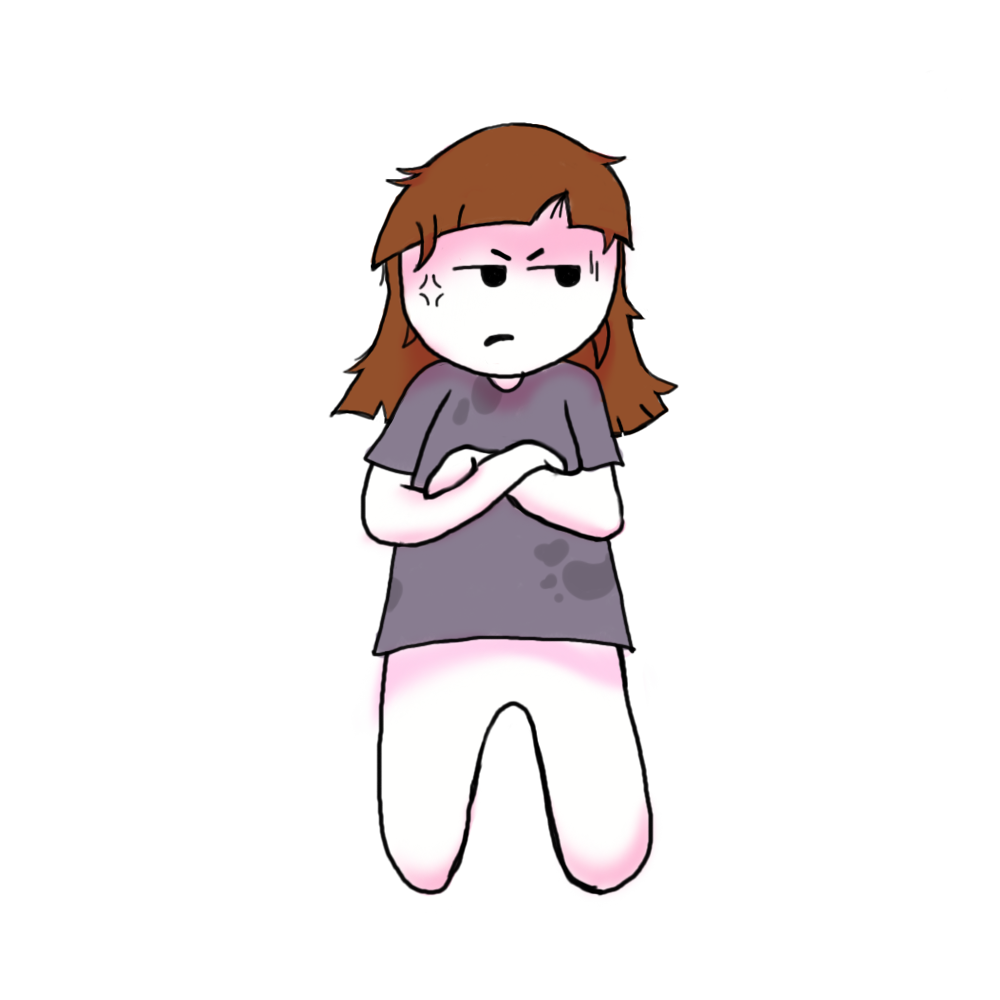

Era verano, 8 de enero para ser precisos. Me levante temprano, era una fecha especial, llevaba semanas planeándole esta sorpresa a mi madre y nada podía salir mal. Baje por las escaleras corriendo. Mi abuela estaba terminando de preparar el desayuno
El olor a café y Tostadas deleitaban mi estomago. Mi abuela me había ayudado con todos los preparativos de la fiesta. La salude, y le pregunte si ya estaba todo listo, ella asintió con la cabeza, y continuó bebiendo su café.

¿Qué preferís ponerle a las tostadas?

Mientras desayunábamos, se levantó mi madre. Su mal humor se notaba a leguas, pero no le di importancia. Corrí hacia ella gritando: “¡Feliz Cumpleeee!”. Pero ella en su mal humor, solo respondió, “Va a ser feliz el día que me enorgullezcan tus notas escolares”. Yo me había llevado algunas materias y seguía enfadada conmigo por eso.

Mientras desayunábamos, se levantó mi madre. Su mal humor se notaba a leguas, pero no le di importancia. Corrí hacia ella gritando: “¡Feliz Cumpleeee!”. Pero ella en su mal humor, solo respondió, “Va a ser feliz el día que me enorgullezcan tus notas escolares”. Yo me había llevado algunas materias y seguía enfadada conmigo por eso.
Al terminar de desayunar eran casi las 10. Yo empecé a ponerme inquieta, ya que a las 11 llegaban los invitados, y mi madre no se había ni cambiado su viejo pijama. La mire a mi abuela, con un gesto de alarma, y ella automáticamente le pidió a mi madre que la acompañara a hacer unos trámites. Mi madre se negó, y me pidió que fuera en su lugar, pero por obvias y secretas razones yo no podía. Gran Error, ella se levanto de la mesa enojada por desobedecer y comenzó a abofetearme.

Termine diciéndole la verdad, que no podía porque le había planeado una fiesta sorpresa, para ver si esto la calmaba, pero no. Ella enfureció aun más, pues evidentemente, ya sabía de la fiesta, y la idea no le agradaba, comenzó a pegarme aun más, a pesar de mis gritos y pedidos de auxilio. Mi abuela, desde la cocina, escucho mis gritos y fue a detener a mi madre lo más rápido que pudo, ella me pidió que corriera y me encerrara en mi habitación y se quedo peleando con mi madre para que se calmara..


Ya en mi habitación, trabé la puerta con algunos muebles para evitar que alguien entrara. Pasaron algunas horas, y yo seguía encerrada llorando, en eso mi abuela golpeo a la puerta, cuando abrí, me comentó que mi madre se había ido de la casa, que volvería en unas horas mas tranquila. Yo en medio de lagrimas le pregunté por qué mi madre me odiaba tanto, a lo que mi abuela negó con la cabeza y dijo que ella no me odiaba, pero no sabía amar de otra forma, yo la abracé y le dije: “no es justo Eso No Es Amor”.

¿Qué final preferís?
Canalización Artística
Terapia y amor propio

Con el pasar de los años entendí, que esa vida no era la que quería para mi, y empecé a canalizar todo escribiendo. Al terminar el secundario inicie la carrera de psicología, durante la cual, termine lo que después se convirtió en mi primer libro. Me encargué de concientizar por todos los medios posibles acerca de este tipo de maltrato y empecé a atender a niños y niñas que pasaron por lo mismo que yo, apoyándolos y ayudando a los padres a no seguir las líneas de la violencia para educar a sus hijos.

Ya pasaron casi 25 años de eso. Actualmente tengo una hermosa niña, con la que trato a diario de educar con amor, aprendí que la violencia no lleva a ningún lado, y después de varios años de terapia logré apagar la rabia que mi madre me había contagiado, para no seguir sus pasos. Ojalá todos los padres puedan aprender esto algún día, y que la violencia infantil deje de ser algo normalizado por las personas.
El maltrato infantil es una causa de sufrimiento para los niños y las familias, y puede tener consecuencias a largo plazo. El maltrato causa estrés y se asocia a trastornos del desarrollo cerebral temprano. Los casos extremos de estrés pueden alterar el desarrollo de los sistemas nervioso e inmunitario.
En consecuencia, los adultos que han sufrido maltrato en la infancia corren mayor riesgo de sufrir problemas conductuales, físicos y mentales.
Tengamos siempre en cuenta esto, ya que con una pronta ayuda terapéutica podríamos mejorar la calidad de vida de nuestros chicos.
Fin